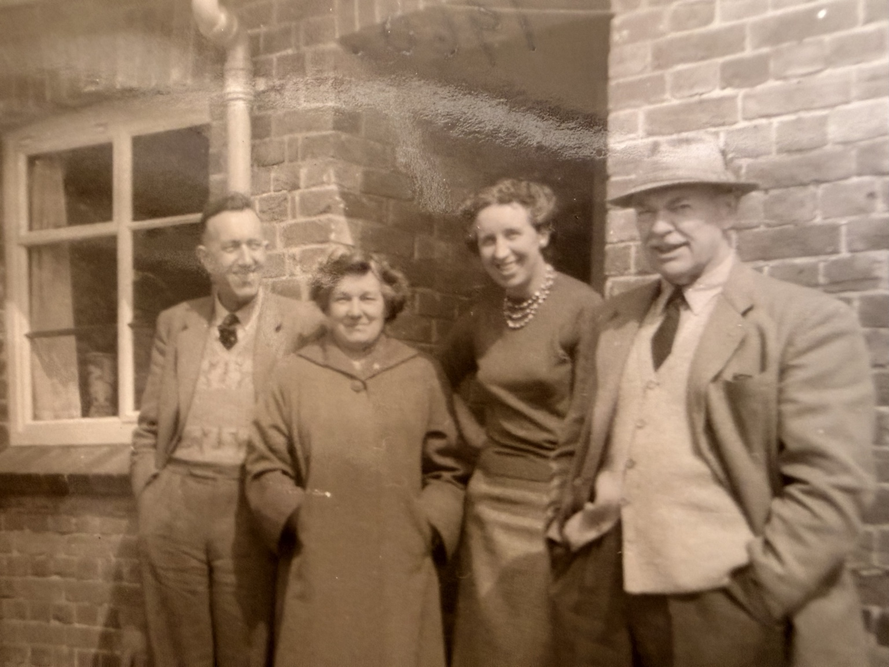
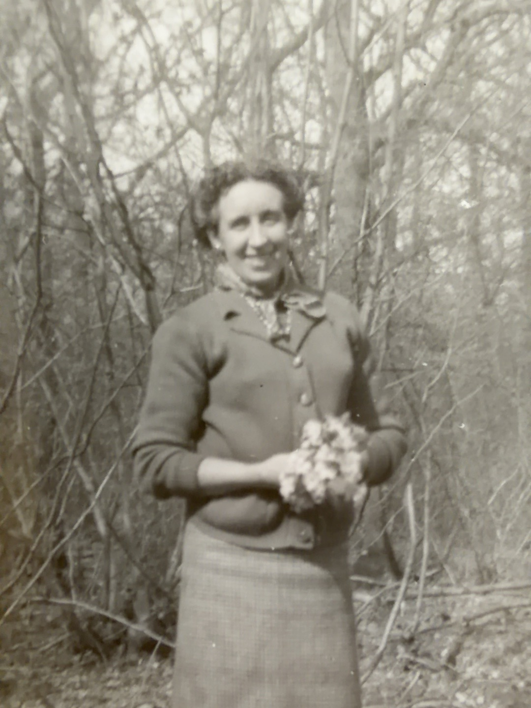

1921: 46 Gipsy Hill
Recorded as Madeline Hawes, aged 7 years 8 months, a boarder in Charles S. Bradley’s household, with Walter, Nellie and the four Hawes children. The family identifies this Madeline as Gladys Madeline, known later as Sally. She is recorded in whole-time education and with both parents alive. View the original census and household transcription →
First marriage: Ivor Watson
The family identifies Ivor Watson as Madeline’s first husband. A studio portrait of the couple survives, together with the undated group at The Oast House, Gun Hill, East Sussex. Their marriage date and place are not yet established. View their original portrait →
Biography
Details from the 11 November 2026 export
These are assertions recorded in the supplied Ancestry family tree, not independently verified facts. Month-only dates are reproduced as supplied and may be registration periods. Existing documentary evidence is retained.
- Birth
- 25 OCT 1913 · Lambeth, London, United Kingdom
Export citation: England & Wales, Civil Registration Death Index, 1916-2007 — General Register Office; United Kingdom Record ↗ - Baptism
- 7 Dec 1913 · Surrey, England
Export citation: Surrey, England, Church of England Baptisms, 1813-1917 — Surrey History Centre; Woking, Surrey, England; Surrey Church of England Parish Registers Record ↗ - Residence
- 1938 · Norwood, England
Export citation: London, England, Electoral Registers, 1832-1965 — London Metropolitan Archives; London, England; Electoral Registers Record ↗ - Residence
- 1939 · Kent, England
Export citation: 1939 England and Wales Register — The National Archives; Kew, London, England; 1939 Register; Reference: Rg 101/1864i Record ↗ - Residence
- 1947 · Surrey, England
Export citation: Surrey, England, Electoral Registers, 1832-1962 — Surrey History Centre; Woking, Surrey, England; Surrey Electoral Registers; Reference: CC802/58/2/1 Record ↗ - Death
- Dec 2005 · Eastbourne, Sussex, England
Export citation: England & Wales, Civil Registration Death Index, 1916-2007 — General Register Office; United Kingdom Record ↗
Name as exported: Gladys Madeline Hawes.
Ivor and The Oast House photograph
Family testimony supplied by Antony Greenfield on 8 November 2026 identifies Ivor as Madeline’s husband. A family photograph shows them with Eric and Kathleen at The Oast House, Gun Hill, East Sussex. The date of the photograph, Ivor’s surname and marriage details have not yet been supplied. The accompanying identification spells her name “Madeleine”; the biography retains the existing family-record spelling Madeline pending clarification.
Family history
Registered in the birth index as Gladys M. Hawes in Lambeth, London, during October–December 1913, with mother’s maiden surname Creese (volume 1D, page 843). Family testimony identifies her middle name as Madeline: she was known as Madeline within the family, while her friends and husbands called her Sally. The birth index corroborates the initial M, but does not itself spell out Madeline, state an exact birth date or identify her father.
Research and verification
The current tree entry is based on Civil birth index, Lambeth, 1913 Q4; middle name and nickname from family testimony. Original certificates, census records and other first-hand documents are still needed to expand this account.
Documents & photographs

Madeline stands at the right of the wedding group at Christ Church, Gipsy Hill.
View wedding photograph and card →
Eric, Kathleen, Madeline and her husband Ivor, Gun Hill, East Sussex.
View photograph and notes →
Original family photograph, identified by Antony Greenfield on 8 November 2026.
View photograph and notes →References and research
Source: current family tree export and accompanying family research. Original documentary verification remains outstanding.
Original evidence is distinguished from GEDCOM assertions and family recollections. Personal details of living descendants are withheld.